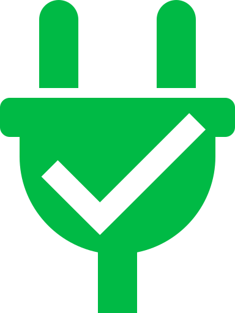

<nav class="navbar navbar-expand-lg navbar-light bg-light app-header">
  <button class="navbar-toggler" type="button" (click)="isCollapsed = !isCollapsed" aria-expanded="false">
    <span class="navbar-toggler-icon"></span>
  </button>
  <div class="navbar-collapse collapse w-100 order-1 order-md-0 dual-collapse2" [collapse]="isCollapsed">
    <ul class="navbar-nav mr-auto">
      <li class="nav-item text-success status" *ngIf="serverConnected" tooltip="Connexion OK ;-)" placement="right">
        
      </li>
      <li class="nav-item text-danger status" *ngIf="!serverConnected" tooltip="Connexion KO !!" placement="right">
        
      </li>
      <li class="nav-item" [routerLinkActive]="['active']">
          <a class="nav-link" routerLink="/saisie">Saisie</a>
        </li>
      <li class="nav-item" [routerLinkActive]="['active']">
        <a class="nav-link" routerLink="/synthese">Synthèse</a>
      </li>
      <li class="nav-item" [routerLinkActive]="['active']">
        <a class="nav-link" routerLink="/historique">Historique</a>
      </li>
    </ul>
  </div>
  <div class="mx-auto order-0">
    <a class="navbar-brand" tooltip="Retour à l'accueil" placement="bottom" routerLink="/home">
      calcul-assmat
    </a>
  </div>
  <div class="navbar-collapse collapse w-100 order-3 dual-collapse2" [collapse]="isCollapsed">
    <ul class="navbar-nav ml-auto">
      <li class="nav-item" [routerLinkActive]="['active']" *ngIf="!authenticated()">
        <a class="nav-link" routerLink="/login">Connexion</a>
      </li>
      <li class="nav-item" [routerLinkActive]="['active']" *ngIf="authenticated()">
        <a class="nav-link logout-link" (click)="logout()">Déconnexion</a>
      </li>
    </ul>
  </div>
</nav>
